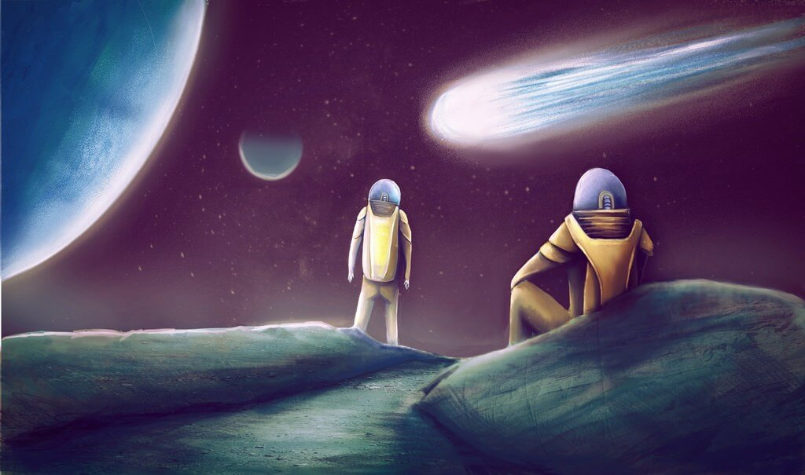
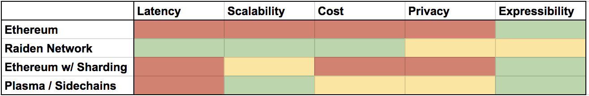

Raiden Network: Vision, Challenges and Roadmap
Vision
Blockchains are awesome, but they are rather slow.
Imagine you are paying for groceries and it takes 10 seconds after you swiped your card until the cashier receives a confirmation of the payment and lets you leave. That’s roughly nine seconds too long.
Now imagine you are a process running on a computer. You want to sell content, data, bandwidth, processing time, storage or access to infrastructure. Imagine it would take 10 seconds to get confirmation of a payment from another process. That’s orders of magnitude off from your standards. It’s insane. The product you are selling might be obsolete by the time you get confirmation of a payment.
The upcoming machine-to-machine (M2M) economy in which software autonomously engages in trade with other software is set to constitute a significant part of future global commerce. But the machines are demanding. They want quick transfers and plenty thereof at almost zero cost. Therefore fast and low fee (micro-)payments will be a crucial building block of an M2M economy.
Blockchains are a hot candidate to become the payment infrastructure for IoT and the M2M economy. Combined with stable coins, the technology also becomes a viable candidate for everyday payments by machines and humans.
But in order to be viable, blockchain-based payment systems need to be fast, cheap and scalable. Those are properties that current blockchains are not particularly good at.
There are plenty of scalability approaches like sharding, side chains, interactive verification protocols or state channels. While all of these can potentially scale overall transaction capacity, only payment channel networks like Raiden seem to be adding the low cost and low latency properties at the same time.
Our vision is to provide a global infrastructure for fast, scalable and cheap decentralized payments for machines as well as humans. This is basically Satoshi Nakamoto’s initial vision but extended to be scalable and ready to support a world with thousands of different specialized tokens.
But how could it look like in
practice?
Note, the following is a randomly made
up story!
Fast forward five years to Bob buying a coffee. From his perspective he
simply uses his smart phone to pay for a coffee as he’s used to. In the
background though, his wallet carries out multiple tasks to facilitate the
payment. It sends some Moonbucks voucher tokens, plus the user’s preferred
stable coin to pay for the coffee. The merchant sends back some FairCoffeeBuyer
reputation tokens which the wallet automatically atomically swaps off-chain for
the local StreetWorkersFund tokens. The wallet sends some AwesomeWalletCreator
tokens to its developers to pay for it’s usage. To interact with the Raiden
Network without running an always-online full Ethereum and Raiden client, Bob’s
app also automatically pays reliable nodes for their services with RDN tokens as
an entrypoint to the Ethereum ecosystem.
So while the machines in the background carry out exchange in a complex network of commerce and services based on a zoo of tokens, the user still has a flawless experience.
Challenges
Payment channel
networks are a very young idea and technology. They have only first been
proposed roughly two years ago, whereas in comparison blockchains are known for
more than 8 years now. On top, they are a quite complicated technology, with
respect to both conception and implementation. This is emphasized by the fact
that neither the Lightning Network teams nor the Raiden Network team set on a
final specification.
Below we address some of the topics that still need work. While we keep
describing them on a high level in this post, each of them definitely deserves
their own future blog post.
Scalable Routing
One of the biggest problems is how to find a path from sender to receiver, without a global view of all channels and their availability and capacity. An efficient but centralized solution would be to have all participants continuously report their channel capacities to a central service and query it to get a path. A decentralized but inefficient alternative is to brute force a path by trial and error or broadcast channel updates to all participants. Efficient routing models through so called small-world networks exist but require dynamic connectivity between nodes. A viable system needs to find a balance between these approaches.
Maintaining a balanced Network / Fees
Pathfinding algorithms should not come up with just any path, but ideally one that decreases or at least avoids adding imbalances in mediating channels. This can be accomplished by participants announcing fees that incentivize finding the cheapest path that implicitly helps to keep the network balanced. Simulations have shown that increasing fees proportional to added channel imbalances greatly increases channel longevity.
Maintaining privacy while providing low latency messaging
Another big issue is preserving endpoint privacy of all participants. In order to help mediate multihop transfers, participants need to have a hot wallet. In such a setup you preferably don’t want to expose your endpoint publicly. Therefore a passive messaging protocol like Whisper is required, but at the same time needs to be able to scale to millions of users.
Light Clients
We assume, that 99% of all participants will access the system using Raiden light clients instead of full nodes. Similar to how users are using Metamask to access Dapps currently. This requires a protocol that effectively supports weakly connected and rarely available nodes at the leaves of the network.
Delegate Challengers while offline
Payment channels should allow any party to close the channel at any time. However, both parties need to be online during a channel’s settlement period to claim their received tokens. This becomes logistically infeasible for most common use-cases, people go offline more often than not. Therefore we need a system of decentralized third parties who are incentivized to settle on behalf of the offline party.
Upgradability / Governance
An upgrade of the protocol potentially affects millions of payment channels and their funds. It’s impractical to expect millions of end-users to vote on some technical protocol update proposal. Therefore, we need an effective governance mechanism that allows to delegate voting right to groups of experts.
Setting the incentives right to have a lively backbone
We need a decentralized network of pathfinding, monitoring and full node services as the backbone of the system. The providers of these services need to be compensated in order to have the right incentives to provide the service. At the same time, the core of the protocol should not have any fees other than those necessary to guarantee a balanced network.
Testing
Testing a decentralized, scalable peer-to-peer system is difficult. End-to-end testing with thousands of nodes is hard. Addressing all possible attack vectors is even harder. Testing is and remains a large part of the Raiden Network’s development process.
Roadmap
Instead of boring you with details of a roadmap let’s look at the obvious question: when is it ready?
We consider µRaiden to be ready and good to use for many applications already.
For the Raiden Network the answer is more complicated, but according to the initial Raiden concept would be: “It’s ready once it supports transfers between participants that don’t have a direct payment channel with each other and the software had a security audit and is deployed on the main chain”. It took us two years, but we are almost there. Add a security audit, deploy on the mainnet and we are done.
But you know the 80/20 rule. You can get 80% done in 20% of the time and the remaining 20% take another 80% of the time. Successful projects are going the lengths of also delivering as much as possible of the last 20% in order to gain adoption and stay competitive.
There are still many dimensions on which the Raiden Network can and should be improved. For example privacy, efficiency of finding a path, longevity of channels, accessibility through light clients, shorter settlement periods, governance mechanisms, usability etc. And some of them are must haves to satisfy our standards regarding a Minimal Viable Product.
.jpg)
Fortunately, the Raiden Network is built for continuous development with abstractions designed to allow for parallelized progress on many of the components that can be improved. Nonetheless this will take time, require research and hard work. But it’s worth it.
So far we have only addressed the protocols and the software. But in order to see widespread adoption, an even greater endeavor is to bootstrap a healthy ecosystem around the Raiden Network to make it a developer’s first choice when deciding on a payment infrastructure. Being able to set dedicated incentives to third parties via the RDN External Developer Program will be a key to success.
Conclusion
The Raiden team is growing. We have been hiring talented people from all over the world and will keep on doing so. The Raiden Network is an enormous endeavor attempting to become a viable backbone for decentralized global scalable payments.
Development of this exciting new technology will take sweat, time, and effort, but we are dedicated on making our vision of fast, cheap and scalable blockchain based payments a reality.
The Raiden project is led by brainbot labs Est.